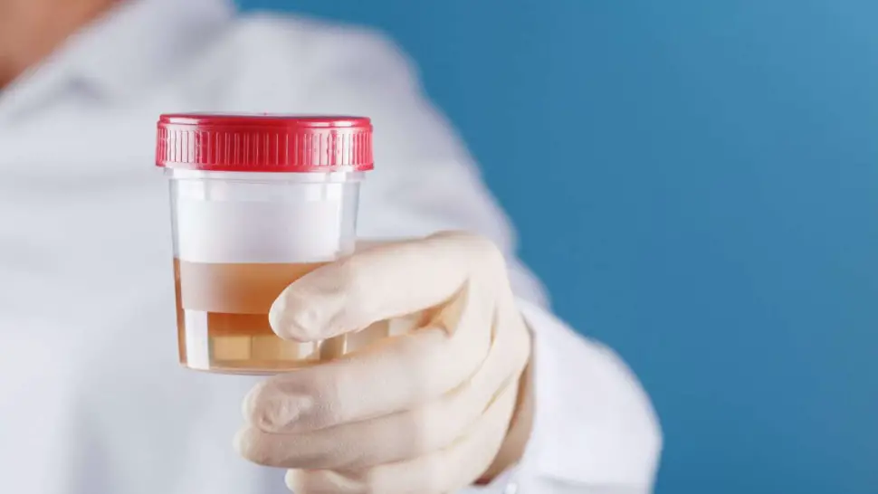

Sang dans les urines (hématurie) : quelles sont les causes ?

Le sang dans les urines est un symptôme qui peut être causé par plusieurs pathologies. Initialement, la coloration de l’urine est jaune (présence du pigment "urobiline") ou transparente (bonne hydratation). Cependant, si une personne observe une coloration anormale (urine foncée, traces de sang dans les urines,...), il est conseillé de consulter un médecin pour un diagnostic et un traitement appropriés. La prise en charge de ce symptôme doit être réalisée le plus tôt possible.
L'hématurie fait partie des troubles des voies génito-urinaires. Ce terme médical désigne la perte de sang et la présence de sang dans l'urine visible parfois au moment de la miction. Plusieurs conditions et maladies différentes (cas de pyélonéphrite,...) peuvent provoquer une hématurie. Ceux-ci comprennent les infections, les maladies rénales, le cancer et les troubles sanguins rares. Le sang peut être visible ou en si petite quantité qu'il ne peut pas être vu à l'œil nu (il n'y a pas forcement de sensations de brûlure au moment de la miction).
La présence de sang dans les urines (visibilité du sang dans le jet ou non) peut être le signe de quelque chose de grave, même si cela ne se produit qu'une seule fois. Les saignements dans l'urine sont souvent en lien avec un problème de santé (traumatismes après un choc physique, problèmes de l'appareil urinaire,...). De la sorte, ignorer l'hématurie peut entraîner un risque d'aggravation et de complications de maladies graves telles que le cancer et les maladies rénales. De ce fait, il est impératif de parler à un médecin dès que possible. Le médecin peut analyser l'urine du patient et prescrire des tests (prise de sang, IRM, ECBU,...) pour déterminer la cause de l'hématurie et créer un plan de traitement pour une prise en charge optimale.

Sommaire
- Quels sont les types d'hématurie ?
- Quelles sont les causes de sang dans les urines ?
- Comment la cause de l'hématurie est-elle diagnostiquée ?
- Que faire quand on a du sang dans les urines ?
- Hématurie : J'ai du sang dans les urines, que dois-je faire ? - Vidéo
- Peut-on guérir et comment traite-t-on l'hématurie ?
- Quelles sont les complications associées à l'hématurie ?
- Comment prévenir l'hématurie ?
- Sources
Quels sont les types d'hématurie ?
Quelles sont les causes de sang dans les urines ?
Comment la cause de l'hématurie est-elle diagnostiquée ?
Que faire quand on a du sang dans les urines ?

Peut-on guérir et comment traite-t-on l'hématurie ?
Sources
- Hématurie isolée. https://www.msdmanuals.com/fr/
- Calculs dans les voies urinaires. https://www.msdmanuals.com/fr/accueil/troubles-r%C3%A9naux-et-des-voies-urinaires/calculs-dans-les-voies-urinaires/calculs-dans-les-voies-urinaires
- Cancers de la vessie : les points clés. https://www.e-cancer.fr/Patients-et-proches/Les-cancers/Cancer-de-la-vessie/Les-points-cles